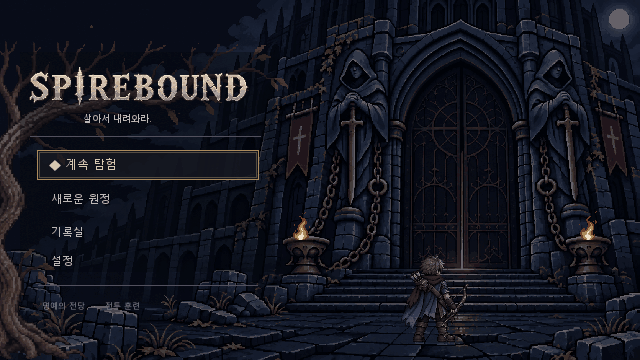

주인공을 배경과 같은 청회색 명암으로 맞추고, 화로 일렁임·작은 불티·미세한 나무 흔들림·간헐적 낙엽을 분리했습니다. 검토용 합성이며 현재 게임에는 반영하지 않았습니다.
정지 이미지 원본 · 움직임 원본 · 구성·제약
640×360 논리 픽셀을 2배로 표시합니다. 6초/10fps 합성 GIF이며 게임 렌더링 속도·모바일 성능을 검증한 결과는 아닙니다. 실제 저장이 없는 경우에는 ‘계속 탐험’을 숨기는 기존 규칙을 유지할 예정입니다.